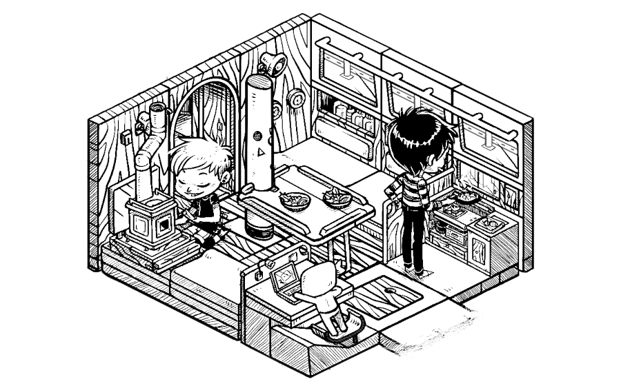
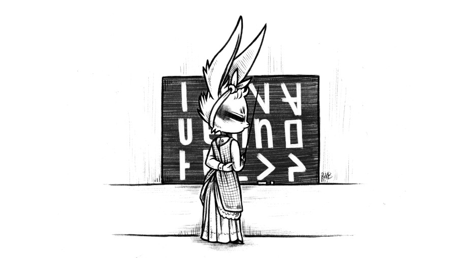
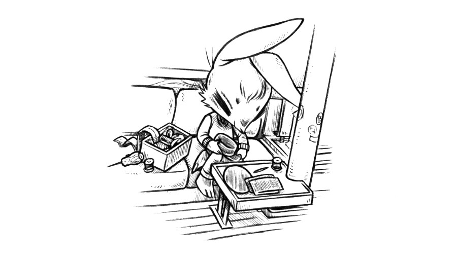

home

log
Receive monthly updates via our RSS feed, or by signing up to our monthly newsletter.
2026
February 2026

- Wiki, updated knots with a figure-eight follow-through knot, also, Pino has a new headsail!
- Pavol, created a volume control tool.
- Adelie, made it so images are drawn faster.
- Turye, added support for 24x24 pixels uf3 fonts.
- Uxntal, collected generic routines and commonly used objects into example libraries.
At the start of the month, we spent a delightful couple of days deep in the wintry and rainy Spanish countryside, gathered in a medieval monastery with the Ink & Switch team for the 10 years anniversary of the studio. We also met up with Javier and Marcelino who gave us coffee and a book on celestial navigation, we will savor a cup while studying the sky.
We asked folks on the fediverse for their favourite rabbits from Rek's recent series, and picked out the four most popular and made stickers. We received them just yesterday and they look amazing! Thanks to everyone who already asked for a sheet! We pack the letters by hand, and Dev makes a spirograph on the back of each one encoding the date in gear radius and ratio.
We've hit some annoying issues with Arch, where mainstay programs sudden change their behavior or gets abandoned like volumeicon. Being unable to control the master volume without opening a full GUI application is a pain. Devine to the rescue! An hour's work and Pavol was born! In that same vein, while working on the new version of Donsol, we realized we'd need to design fonts larger than 16 px high, something that Turye was incapable of doing, until now.
On March 6th, we'll be giving a talk at the University Of Victoria, to talk about how our 10 years of living on the water has influenced our design and development work. The event is sold out at this point, but if you signed up see you there! Oquonie for Playdate will be on sale Playdate's upcoming Catalog Anniversary Sale running from March 5th to March 19th.
Devine has been puzzling over an extremely odd programming language idea and is looking for some pointers, prior art, ideas, so if ferns, rewriting, confluence, linear logic, tensor and multisets mean anything to you and interests you, get in touch. Lastly, we'll leave you with this image of Polycat working on a 2009 EeePC under HaikuOS, courtesy of Tbsp!
Book Club: We finally finished reading Middlemarch by George Eliot, a very good read, we will miss it. We are also reading Red Plenty by Francis Spufford and This Is How You Lose the Time War by Amal El-Mohtar and Max Gladstone.
January 2026

- Uxn, we released a new SDL2 emulator called uxn2 to replace the ol' uxnemu!
- Wiki, updated moisture prevention underliner, chainplates(with new photos and measurements), and sewing.
- Punk Rabbits, Completed the series(103 rabbits)!
- Hakum, released a new comic page for Sabotage Study.
This is likely very obvious to most people, but recently it dawned on us that clothes are, in a certain way, open-source. We can go to a thrift store, buy a shirt, rip out the seams, study it, lay all of the pieces down over new fabric, trace the patterns, cut them out, and sew it all back together to produce a copy of that same shirt. We've been wanting to learn how to make our own clothes but didn't know where to begin, until this month. Our first project was to reproduce our hats, after the store we bought them at stopped stocking them. We bought black cotton canvas at a local fabric store, took our old hats apart and re-built them(See Rek's hat, and Dev's hat). Later, Devine did the same for our old messenger backpack.
Goblin Week, an event in which people draw goblins for 7 days, occurs on the last full week of January. Devine's entries were inspired by a passage in Samuel Butler's Erewhon, and Rek drew some spunky cartoony goblins.
Inspired by Prahou's Subversive.pics, we put together image feeds for our personal websites.
Note that we are still uploading photos to Days, our studio's image feed.
We are making progress on the Playdate version of Donsol, and the polished manuscript for the Victoria to Sitka Logbook. We do not yet know when either will be finished so let us end this updated with one last small thing: a video by VacuumBeef of Snake Game in Orca.
Book Club: This month we have reached book 8 of Middlemarch by George Eliot, the very last one. We are also reading Mémoires d'Hadrien by Marguerite Yourcenar, and Amusing Ourselves to Death: Public Discourse in the Age of Show Business by Neil Postman.
Archives
See log archives for 2025, 2024, 2023, 2022, 2021, 2020, 2019, and 2018.